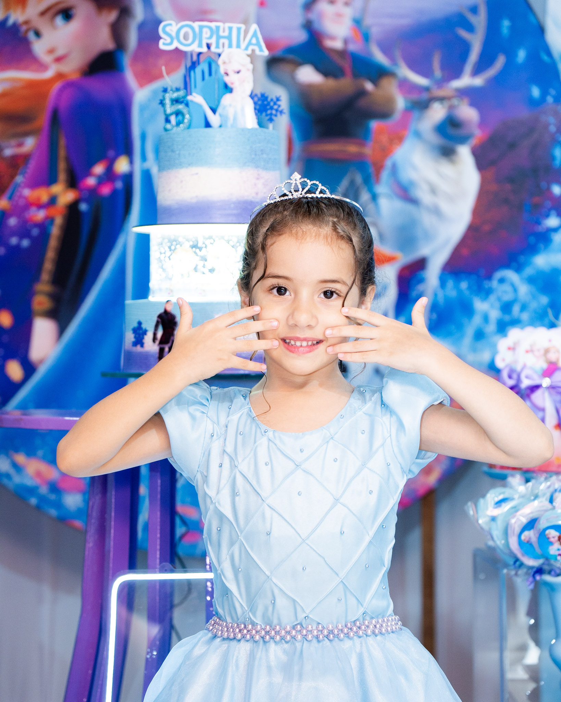
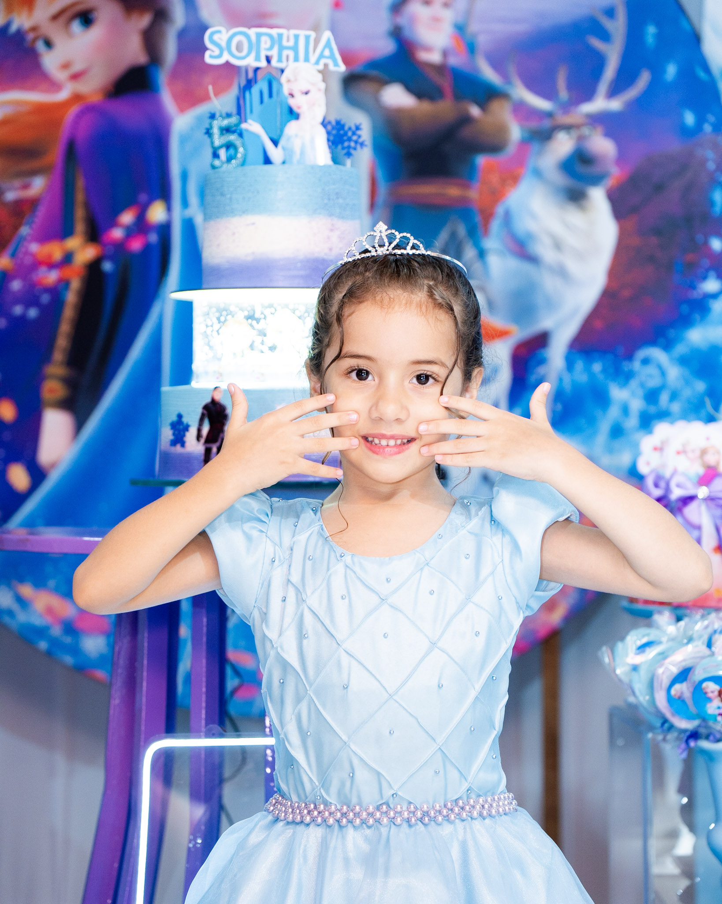

aniversário | sophia
O aniversário de 5 anos da Sophia foi pura magia e emoção! A comemoração aconteceu na cidade de Pacajus, em uma noite de muito amor e alegria. Cada detalhe da festa refletia o carinho dos pais em tornar esse momento inesquecível para a pequena e para todos que estavam presentes.
Para a INTS Fotografia, foi uma grande felicidade poder registrar cada instante dessa celebração tão especial. Nosso maior propósito é eternizar memórias, e estar presente nesse marco da vida da Sophia foi motivo de muita honra e gratidão.
Era lindo observar no rosto dos pais a emoção e a alegria por ver a filha completar mais um ano de vida. Esses instantes, cheios de amor verdadeiro, são o que tornam nosso trabalho tão especial e nos lembram diariamente do privilégio que é fazer parte de histórias assim.
Desejamos à Sophia uma vida cheia de saúde, sonhos realizados e muitos momentos felizes. Aos seus pais, que continuem celebrando a vida com esse mesmo amor e dedicação. A INTS se sente imensamente feliz por ter participado dessa noite e eternizado memórias tão valiosas.
 
